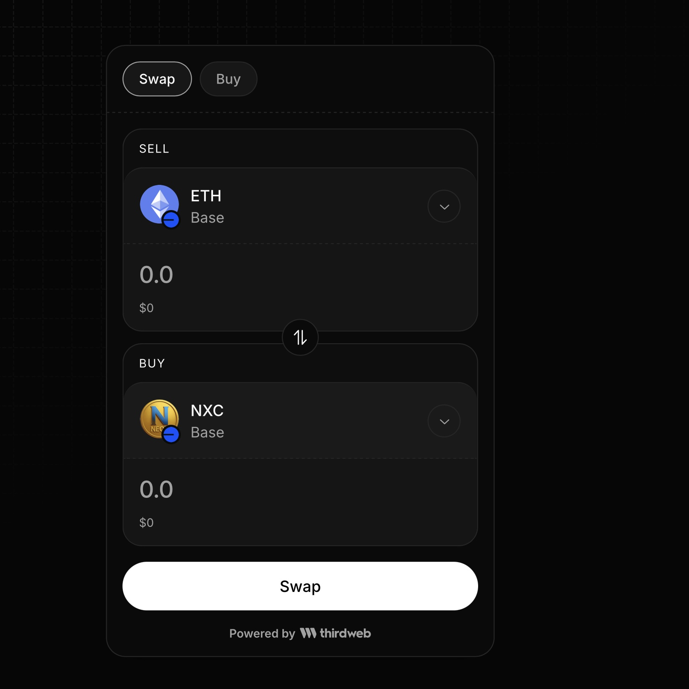
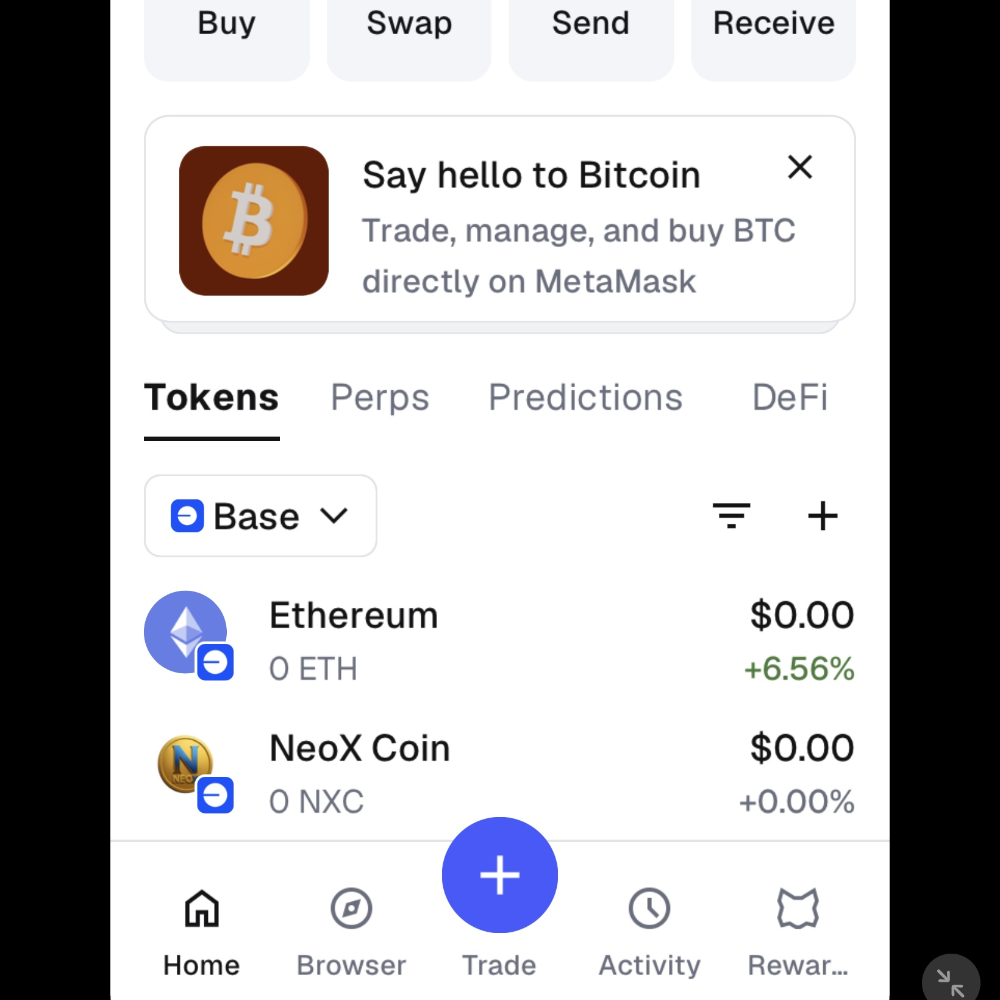

|
Follow this simple 3-step guide to acquire NXC on the Base network. 只需跟隨以下簡單 3 個步驟，即可在 Base 網絡上輕鬆獲取您的 NXC。
Download and set up a secure crypto wallet such as MetaMask, Coinbase Wallet, or Trust Wallet. Make sure to securely back up your seed phrase and add the Base Network to your wallet networks.
下載並設定一個安全的加密貨幣錢包（如 MetaMask、Coinbase Wallet 或 Trust Wallet）。請務必安全地備份您的助記詞，並在錢包網絡中新增 Base Network。
Purchase Ethereum (ETH) from your preferred central exchange (like Coinbase, Binance, or Kraken) and withdraw it directly to your Web3 wallet address using the Base Network. Alternatively, you can bridge ETH from Ethereum mainnet to Base.
從您信任的中心化交易所（如 Binance、Coinbase 或 Kraken）購買以太坊（ETH），提現時網絡選擇 Base Network 並直接轉入您的錢包地址。或者，您亦可以使用官方跨鏈橋將以太坊主網的 ETH 跨鏈至 Base。
Connect your wallet directly to our verified token pool. Input the official NeoX Coin contract address if prompted: 0x9C17fDa33CBEe4aE3768252Fd62156034F42B40B, enter the amount of ETH you want to swap, and confirm the transaction.
將您的錢包直接連接到我們已驗證的代幣池。如果系統提示，請輸入官方唯一的 NeoX Coin 合約地址：0x9C17fDa33CBEe4aE3768252Fd62156034F42B40B，輸入您想兌換的 ETH 數量，然後確認交易。

If NXC does not appear automatically in your wallet after the swap, you can import it manually or use our automation shortcut below:
如果兌換後錢包內未自動顯示 NXC，您可以手動複製資料匯入，或點擊下方快捷鍵自動新增：
